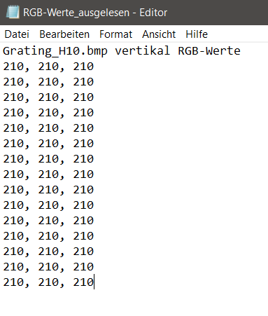
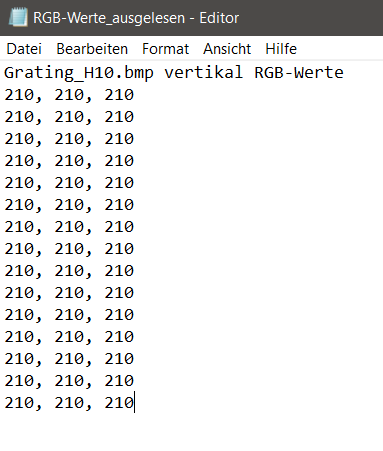

Übung 1
Aufgabe 1
Die zwei zu bearbeitenden Bilder:
Aufgabe 1 - b)
Die Dateigröße von 1.555.254 Bytes kommt zu Stande, da die Bilder mit einer Farbtiefe von 24 bits pro Pixel und einer Größe von 540x960 ziemlich viele bits beinhaltet und somit eine größere Datei ist, als ein Standard jgp.
Aufgabe 2 - a)
 

Aufgabe 2 - b)
Bei der Abtastung eines analogen Signals muss das Abtasttheorem eingehalten werden. Dieses lautet:
fa > 2 x fmax
fa : Häufigkeit (Frequenz) der Abtastung
fmax : höchste Frequenz im Signal
Beim Audiosignal kann man sich dies leicht so vorstellen, dass man pro Periode der schnellsten
Schwingung (d.h. des höchsten Tons) mehr als 2 Beobachtungen benötigt. Genau genommen liegt der
Grenzfall bei 2, wie er oben in der folgenden Abbildung zu sehen ist:
Aus zwei Abtastwerten pro Periode kann das Originalsignal wieder rekonstruiert werden wie die gestrichelte Kurve andeutet. Die resultierende Frequenz fres entspricht dann wieder der ursprünglichen Signalfrequenz fs. Da aber bei nur zwei Werten pro Periode auch die Nulldurchgänge getroffen werden könnten und damit kein Signal vorhanden wäre merken wir uns das Abtasttheorem in der Form fa > 2 x fmax. Wird das Theorem nicht eingehalten (im vorigen Bild der unter Fall), kann aus den Abtastwerten die ursprüngliche Kurve nicht mehr hergestellt werden. Es entsteht eine höhere Periodendauer, bzw. eine niedrigere Frequenz
Aufgabe 2 - c)
Graustufenbilder der beiden Bilddateien:
// erzeuge graustufenbild
for(int y = 0; y < bmp.image.getHeight(); y++) {
for(int x = 0;x < bmp.image.getWidth(); x++) {
// ** ToDo **
PixelColor px = bmp.image.getRgbPixel(x, y);
int y_value = (int) (0.3 * px.r + 0.6 * px.g + 0.1 * px.b);
PixelColor newPx = new PixelColor(y_value, y_value, y_value);
bmp.image.setRgbPixel(x, y, newPx);
}
}
Aufgabe 2 - d)
Als Alias-Effekte werden im Bereich der Signalanalyse Fehler bezeichnet, die auftreten, wenn
im abzutastenden Signal Frequenzanteile vorkommen, die höher sind als die halbe Abtastfrequenz.
Aliasing kann einerseits durch die Nichtbeachtung des Abtasttheorems (zu geringe Abtastfrequenz)
beim digitalen Abtasten von Signalen auftreten und andererseits, wenn das abzutastende Signal von
einem Störsignal überlagert ist, das seinerseits Frequenzen enthält, die höher als die halbe
Abtastfrequenz sind. In der Bildverarbeitung und Computergrafik treten Alias-Effekte bei der Abtastung
von Bildern auf und führen zu Mustern, die im Originalbild nicht enthalten sind.
In der Audiotechnik äußern sich Alias-Effekte als Störgeräusche. Um Aliasing zu verhindern, können
Tiefpassfilter eingesetzt werden, die unerwünschte Frequenzanteile herausfiltern.
Aufgabe 2 - e)
Die beiden Bilddateien Grating_V4.bmp und Grating_H10-bmp haben entweder ein horizontales (V4) oder vertikales (H10) Muster und kriegen daher beim Downsampling in gleicher Richtung wie das Muster keine sehbare Veränderung.

Grating_H10.bmp
Grating_V4.bmp
// downsampling (horizontal)
int downsampling_range = 5;
for(int y = 0; y < bmp.image.getHeight(); y++) {
for(int x = 0; x < bmp.image.getWidth(); x += downsampling_range) {
// ** ToDo **
PixelColor px = bmp.image.getRgbPixel(x, y);
for (int i = 1; i < downsampling_range; i++) {
if (x + i < bmp.image.getWidth()) {
bmp.image.setRgbPixel(x + i, y, px);
}
}
}
}
Ergebnisse des Downsampling bei 1,2, 3 und 4 Spalten:
// downsampling (vertical)
for(int x = 0; x < bmp.image.getWidth(); x++) {
for(int y = 0; y < bmp.image.getHeight(); y += downsampling_range) {
// ** ToDo **
PixelColor px = bmp.image.getRgbPixel(x, y);
for (int i = 1; i < downsampling_range; i++) {
if (y + i < bmp.image.getHeight()) {
bmp.image.setRgbPixel(x, y + i, px);
}
}
}
}
Ergebnisse des Downsampling bei 1, 2, 3 und 4 Spalten:

Bei dem Downsampling von beiden Bildern kann man bereits bei einem Downsampling von einer Spalte eine sehbare Veränderung erkennen. Das gesamte Bild wirkt etwas verschwommen und es treten Muster auf. Wird die Spalteanzahl erhöht, "verbessert" sich die Schärfe, da die Balken in den Bildern dicker werden.
Downsampling auf den Datein nature.bmp und manmade.bmp von Herr Mixxdorf
Eine deutlich auffallende Verschlechterung der Bildqualität fällt bei einem Downsampling von 3 Spalten auf. Das Bild wird immer unschärfer und einzelne Pixelblöcke sind deutlich zu sehen. Beim Bild mit der Pflanze ist der Verlust der Bildqualität deutlich besser zu sehen, da dieses Bild detailreicher ist als das andere.
Aufgabe 3 - a)
// bitreduzierung
int reduced_bits = 6;
for(int y = 0; y < bmp.image.getHeight(); y++) {
for (int x = 0; x < bmp.image.getWidth(); x++) {
// ** ToDo **
PixelColor px = bmp.image.getRgbPixel(x, y);
px.r /= Math.pow(2, reduced_bits);
px.r = Math.pow(2, reduced_bits);
px.g /= Math.pow(2, reduced_bits);
px.g= Math.pow(2, reduced_bits);
px.b /= Math.pow(2, reduced_bits);
px.b *= Math.pow(2, reduced_bits);
bmp.image.setRgbPixel(x, y, px);
}
}
Aufgabe 3 - b)
Ergebnisbilder von Flächen-Bild (Holz):
Reduzierung um 1 Bit
Reduzierung um 2 Bit
Reduzierung um 4 Bit
Reduzierung um 5 Bit
Reduzierung um 6 Bit
Reduzierung um 7 Bit
Ergebnisbilder von Detail-Bild (Blume):
Reduzierung um 1 Bit
Reduzierung um 2 Bit
Reduzierung um 3 Bit
Reduzierung um 4 Bit
Reduzierung um 5 Bit
Reduzierung um 6 Bit

Reduzierung um 7 Bit
Aufgabe 3 - c)
reduced_bits = 6;
int bitsPerColor = 8;
for(int y = 0; y < bmp.image.getHeight(); y++) {
for (int x = 0; x < bmp.image.getWidth(); x++) {
// ** ToDo **
PixelColor px = bmp.image.getRgbPixel(x, y);
int newR = px.r;
px.r /= Math.pow(2, reduced_bits);
px.r = Math.pow(2, reduced_bits);
px.r -= newR;
px.r= Math.pow(2, bitsPerColor - reduced_bits - 1);
px.r += 128;
int newG = px.g;
px.g /= Math.pow(2, reduced_bits);
px.g = Math.pow(2, reduced_bits);
px.g -= newG;
px.g= Math.pow(2, bitsPerColor - reduced_bits - 1);
px.g += 128;
int newB = px.b;
px.b /= Math.pow(2, reduced_bits);
px.b = Math.pow(2, reduced_bits);
px.b -= newB;
px.b= Math.pow(2, bitsPerColor - reduced_bits - 1);
px.b += 128;
bmp.image.setRgbPixel(x, y, px);
}
}
Differenzbilder der Flächen-Bilder (Holz):

Differenz bei Reduzierung um 1 Bit
Differenz bei Reduzierung um 4 Bit
Differenz bei Reduzierung um 6 Bit
Differenzbilder der Detail-Bilder (Blume):
Differenz bei Reduzierung um 1 Bit
Differenz bei Reduzierung um 4 Bit

Differenz bei Reduzierung um 6 Bit
Differenz bei Reduzierung um 7 Bit